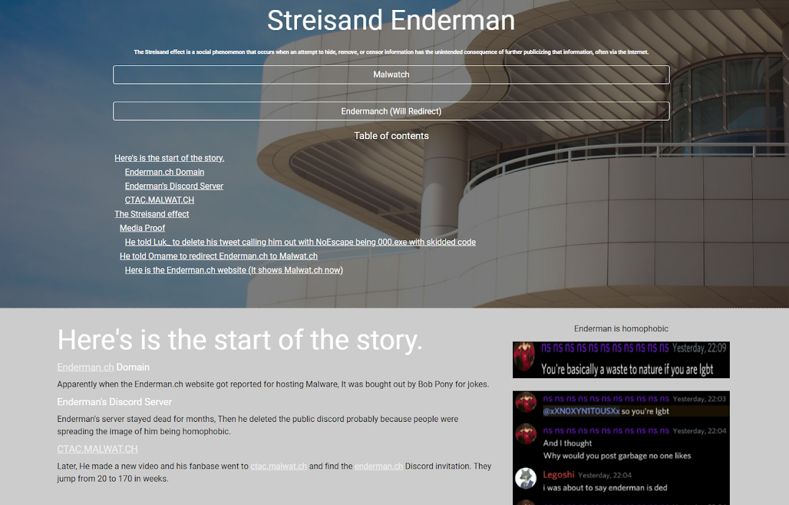

Old Times
September 28, 2024
Today, I am publishing a Google Site that contains all of my old cringy websites. I did want to make it private ngl but I do want to have these publicly available and not on a Google Docs folder that will accidentally get deleted.
It has an archive of my old personal website, two old websites I made during middle school, and one single page
of my Android fan site. I do think it is nice to look back and see what I used to do.
Let's go into the archive and give comments!
viewable at archive.gemdation.com
"LIKE????"Barely starting and I hate how I sound like a gay Twitter stan already.
"banger"True! This was indeed my favorite sticker out of the entire thing, the only one I liked in fact.
I'm not exactly embarrassed at writing this, but I am embarrassed that I never got to delete it. It even links to the old website, thankfully I still have access to that so I went and changed it.
One thing I noticed is that one the other email that has access to the original PostPS website is yoshkiv.plus@gmail.com, ugh what was with me and making "unique" usernames. The document is likely owned by that account.
One repressed memory I have is making the Evan Scott Huber page, a person who made a meme song video I found online. And then I got the terrible idea to document it like I'm some sort of commentary YouTuber.
Ugh, firstly one thing I hate is this.
Again, 13 year old acting like I expose people.
I must add that I think Enderman (the YouTuber) seems fine and the group that "exposes" him seems like your average Discord drama group, I can relate.
I still would be petrified if any of them saw these, even if Evan was likely a bad person I would hate for anyone to come and see these when they were newly made.
You will definitely not hear a professional blogger say "I think", misspell "happend", and then ponder over a YouTuber's podcast. Oh and that name too, what a relic.
This hacker-looking page just for a no-code web app I made.
Seriously? emptycharacter.com exists for a reason.
Now on to the middle school Google Sites pages.
What eyesore is this? I'm glad you didn't ask but there is a few things you might not see at first that I want to show:
- The banner is a generic image of uhh, waves? Whatever that is, it is not Lego.
- The movie poster is terrible quality
- The formatting is terrible
- The font choice is as bad as the colors
- The Directors section just has a screenshot of the what happens when you search "lego movie directors"
- The logo and favicon is a Roblox noob head, it looked like Lego I guess
The other website is basically this but with more topics so it'll be cut short:
How fun, I must add that I have had various usernames and Gemdation and PostPS are barely the surface.
- Gemdation
- PostPS
- Kimbrezen
- Sometimes stylized as Kimbrezen, this username was first made on a "shock website" so I could view certain videos, hopefully you don't know what a "shock website" is and never will.
- Doot
- yes that is a username
- Pengy Knox
- A fake name, the "Pengy" part is from Memecord, and the Knox part is from Samsung Knox, did I mention how good I am at making usernames?
- Mr. Dog
- One of the themes with this username is that I had a profile picture of a dog drawn in a Minecraft YouTuber trolling animation and it is...this one! (2:19) The eyes are closed on the dog, so I used the Sony Sketch app to draw some derpy eyes on it, I wish I had the image to show.
- REAL FIRST NAME_3233
- REAL FIRST NAME_8077
And since I'm going through all this history, I might as well type a little bit about Sony Sketch! It was a very basic app that I used to make simple graphic designs or profile pictures for Discord. It had stickers, pretty brushes, and a simple user interface, even had a community! I made "graphic designs" on it that I used for Discord while I was underage, the dark times.
Moral of the story, hmm, don't go on Discord when you are like 11, don't go on shock websites, don't write about drama that you just reword from other people, don't put your first name in online games, and make sure to download Sony Sketch for fun!